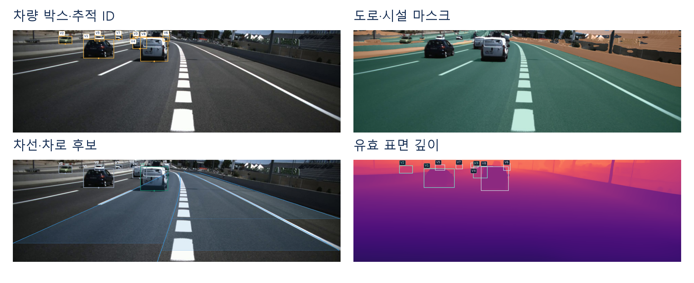
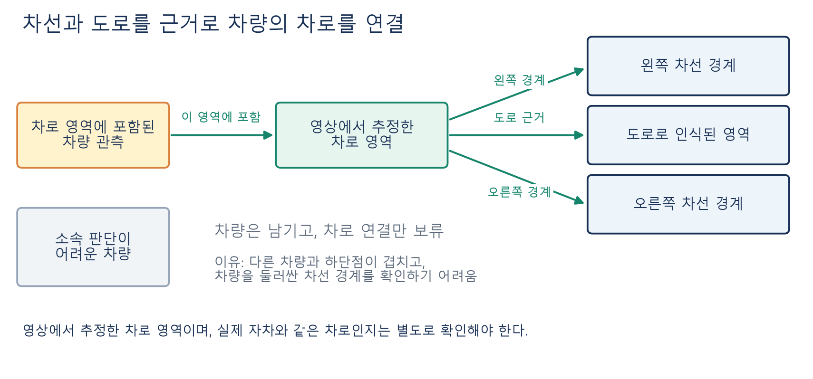
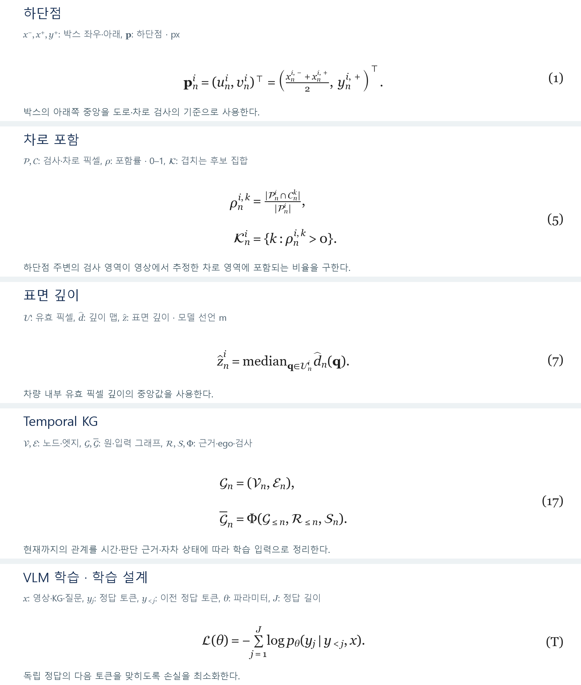

차량 탐지와 추적
차량 박스와 하단 중심을 기록하고, 추적 ID로 과거 관측을 연결합니다.
YOLO26m · BoT-SORTVISION–LANGUAGE · TEMPORAL KNOWLEDGE GRAPHS
영상에서 차량·도로·차로를 추출하고,
관계의 시간 변화를 Temporal KG로 기록합니다.
01 / SEE THE PROCESS
도로 구조 → 차로 후보 → 차량 소속 → 시간 연결
차선 경계와 도로 영역을 함께 확인한 소속 결과
FROM OBSERVATION TO GRAPH
대표 장면을 불러오는 중입니다.
차로 표시는 영상 기반 후보, 시간 연결은 추적 결과입니다. 실제 차로 소속·방향·도로 연결성의 정확도는 아직 검증 중입니다.
02 / THE METHOD
차량의 위치, 도로 영역, 차선 경계에서 관계를 구성합니다.

차량 박스와 하단 중심을 기록하고, 추적 ID로 과거 관측을 연결합니다.
YOLO26m · BoT-SORT도로·시설을 분리한 뒤, 좌우 차선 경계 사이를 차로 후보로 나눕니다.
Mask2Former · CLRerNet가시 표면 깊이를 보조 정보로 남기고, 관측 시각으로 시간 순서를 맞춥니다.
MetricAnything · 촬영 시각ONTOLOGY + TEMPORAL KG
차량·도로·차로·관측은 노드, 소속과 시간 연결은 엣지입니다. 각 엣지에 시각과 근거를 기록해 연결 이유를 남깁니다.
가려진 차량도 관측에 유지.
소속 근거가 부족한 관계는 판단 보류.

03 / TOWARD SCENE UNDERSTANDING
“어느 차량에 주목해야 하며,
그 차량의 주변 관계는 어떻게 변했는가?”
04 / WHAT IS VERIFIED
현재 계산된 범위와 앞으로 확인할 연구 과제
차량·도로·차선 피처 추출과 영상 차로 후보 구성, 과거 관측 연결까지 실행했습니다.
차량 누락·중복·차로 과병합을 검수 중입니다. 실제 이동 방향과 도로 연결성의 정답 검증이 남아 있습니다.
같은 영상과 질문에 목록·정적 KG·Temporal KG를 제공해 답변과 근거의 정확도를 비교할 계획입니다.

차로 소속은 포함률만으로 결정하지 않습니다. 유일 후보·완전 포함·도로 지지·가림·사용 조건을 함께 확인합니다. 학습 손실은 향후 적용할 설계입니다.